Oefenen voor groep 7 en fiets
Oefen het verkeersexamen van groep 7: vragen met uitleg, kruispunten, verkeersborden en een proefexamen – speels, duidelijk en zonder internet.
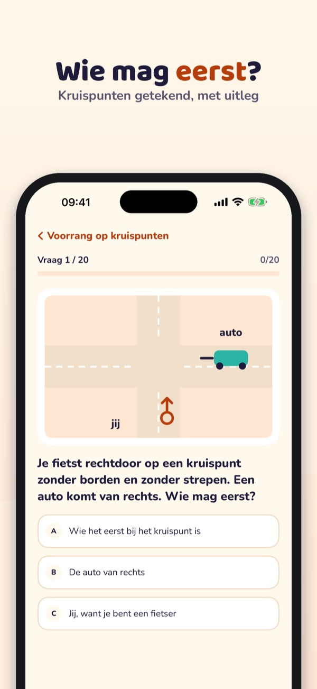
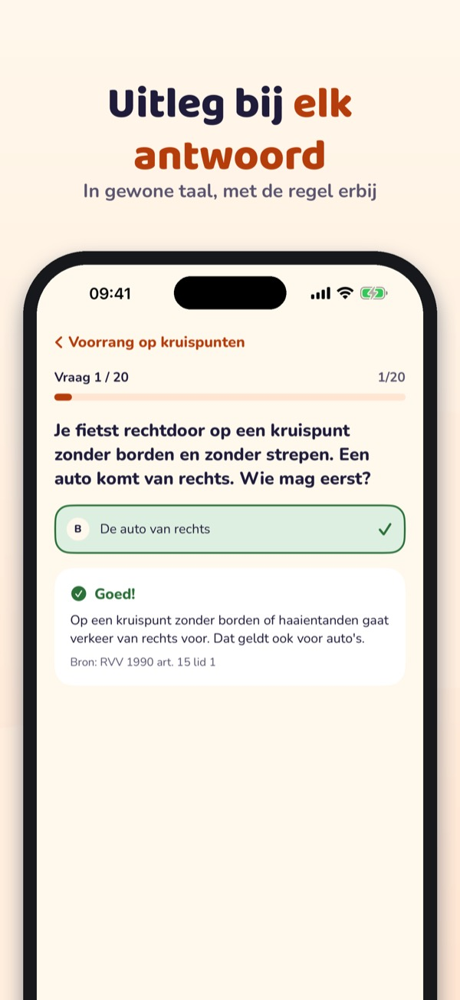
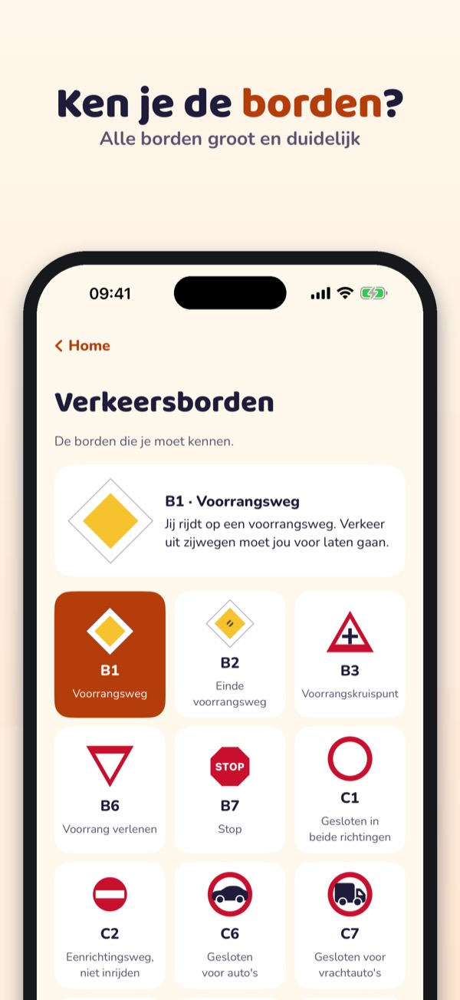
Verkeersheld helpt kinderen oefenen voor het theoretisch verkeersexamen – met kruispunten, borden en fietsregels, uitgelegd in gewone taal.
• Vragen per onderwerp met uitleg bij elk antwoord
Je kunt 20 vragen, de verkeersborden, de begrippenlijst en de checklist zonder aankoop gebruiken. De volledige versie is een eenmalige aankoop die alle vragen, proefexamens en statistiek ontgrendelt. Geen abonnement. Kopen en links naar buiten gaan alleen via een ouder (ouderlijk toezicht).
Ook voor de cyklistprøve (Denemarken), de Radfahrprüfung (Duitsland) en de karta rowerowa (Polen): kies het land in de app.
Verkeersheld is onafhankelijk en neemt geen examen af. Het examen doe je op school. De app verzamelt geen gegevens en heeft geen advertenties.
Terms of Use (EULA): https://www.apple.com/legal/internet-services/itunes/dev/stdeula/
Privacy: https://baytechbv.github.io/privacy/verkeersexamen-eu/
Øv færdselsregler til cyklen
Øv til cyklistprøven: spørgsmål med forklaring, kryds, vejskilte og en prøveeksamen – på dansk, legende let og uden internet.
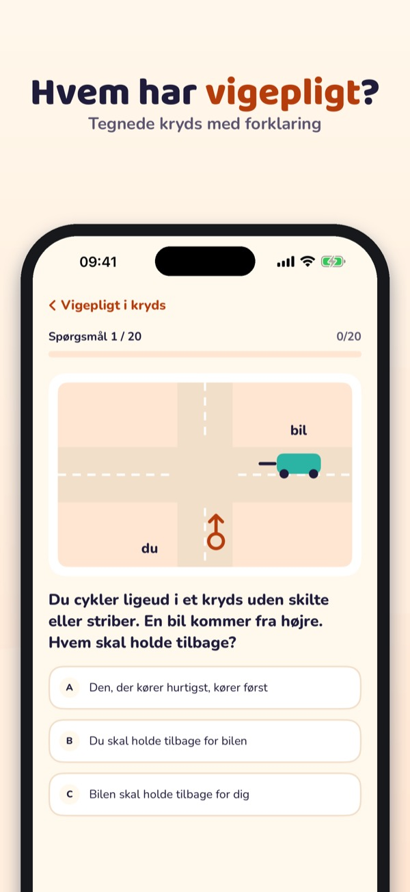
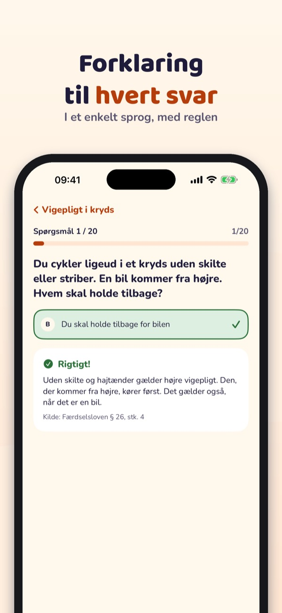
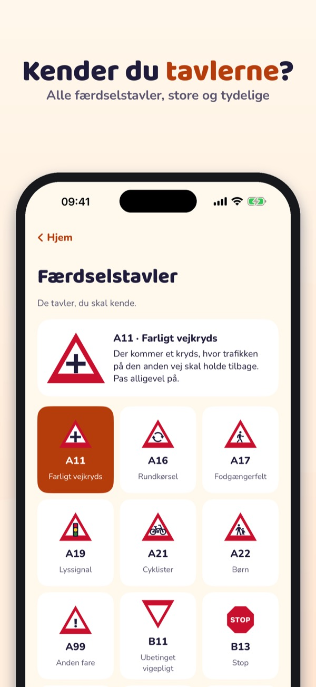
Cykelhelt hjælper børn med at øve til cyklistprøven i skolen – med kryds, skilte og cykelregler forklaret i et enkelt sprog.
• Spørgsmål pr. emne med forklaring til hvert svar
Du kan bruge 20 spørgsmål, vejskiltene, ordlisten og tjeklisten uden køb. Den fulde version er et engangskøb, der låser alle spørgsmål, prøveeksamener og statistik op. Intet abonnement. Køb og links ud af appen kun via en forælder (forældrekontrol).
Cykelhelt er uafhængig og holder ikke prøver. Prøven tager du i skolen. Appen indsamler ingen data og har ingen reklamer.
Terms of Use (EULA): https://www.apple.com/legal/internet-services/itunes/dev/stdeula/
Privacy: https://baytechbv.github.io/privacy/verkeersexamen-eu/
Radfahrprüfung üben, 4. Klasse
Übe für die Radfahrprüfung: Fragen mit Erklärung, Kreuzungen, Verkehrszeichen und eine Probeprüfung – spielerisch, klar und offline.
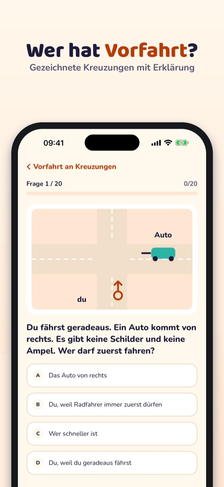
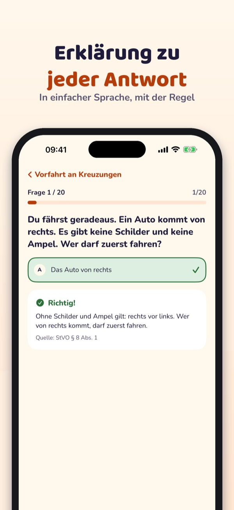
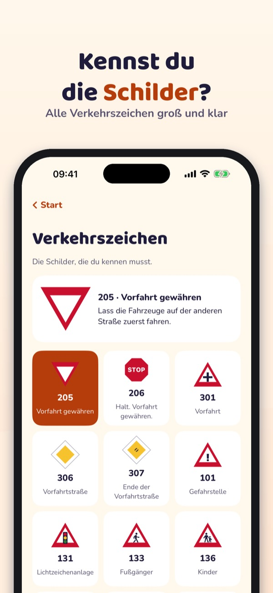
Radheld hilft Kindern, für die Radfahrprüfung in der Schule zu üben – mit Kreuzungen, Schildern und Fahrradregeln in einfacher Sprache.
• Fragen nach Thema mit Erklärung zu jeder Antwort
20 Fragen, die Verkehrszeichen, die Begriffe und die Checkliste kannst du ohne Kauf nutzen. Die Vollversion ist ein Einmalkauf und schaltet alle Fragen, Simulationen und die Statistik frei. Kein Abo. Kaufen und Links nach außen nur über die Eltern (Kindersicherung).
Radheld ist unabhängig und nimmt keine Prüfungen ab. Die Prüfung machst du in der Schule. Die App sammelt keine Daten und hat keine Werbung.
Terms of Use (EULA): https://www.apple.com/legal/internet-services/itunes/dev/stdeula/
Privacy: https://baytechbv.github.io/privacy/verkeersexamen-eu/
Egzamin na kartę rowerową
Ćwicz do egzaminu na kartę rowerową: pytania z wyjaśnieniem, skrzyżowania, znaki drogowe i egzamin próbny – na wesoło, jasno i bez internetu.
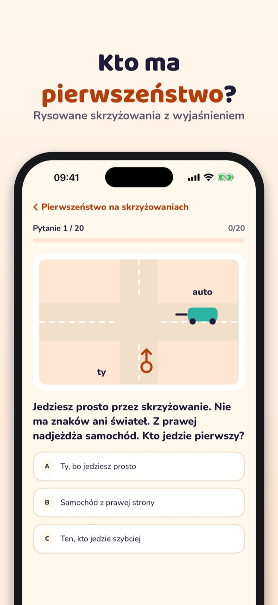
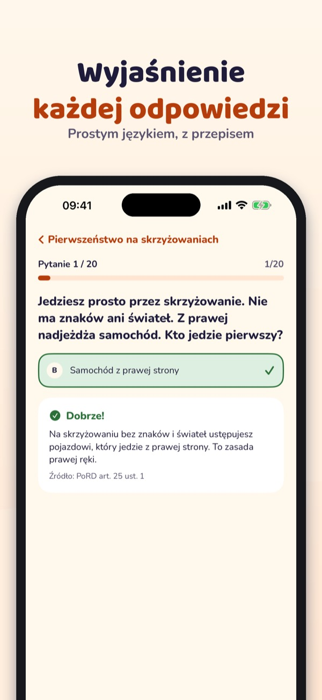
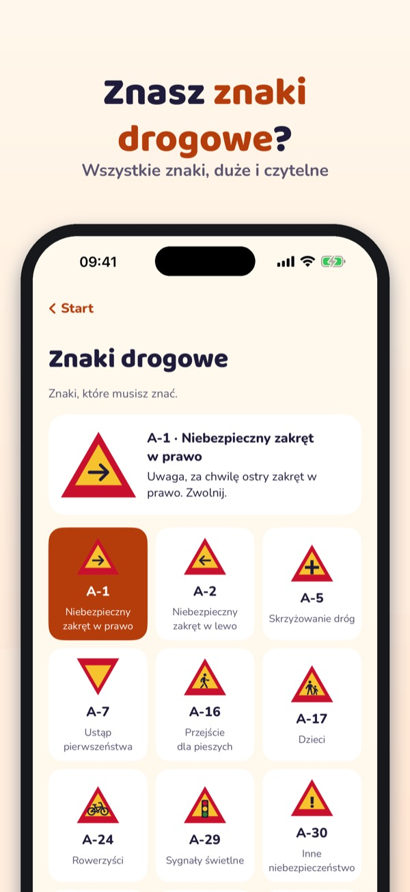
Verkeersheld pomaga dzieciom przygotować się do egzaminu na kartę rowerową – skrzyżowania, znaki i przepisy wyjaśnione prostym językiem.
• Pytania według działów z wyjaśnieniem każdej odpowiedzi
20 pytań, znaki drogowe, słownik i listę kontrolną możesz używać bez zakupu. Pełna wersja to jednorazowy zakup, który odblokowuje wszystkie pytania, egzaminy próbne i statystyki. Bez subskrypcji. Zakup i linki poza aplikację tylko przez rodzica (kontrola rodzicielska).
Verkeersheld jest niezależny i nie przeprowadza egzaminów. Egzamin zdajesz w szkole. Aplikacja nie zbiera danych i nie ma reklam.
Terms of Use (EULA): https://www.apple.com/legal/internet-services/itunes/dev/stdeula/
Privacy: https://baytechbv.github.io/privacy/verkeersexamen-eu/